Spire transformed a 20,000+ SF event center into the Animal Emergency & Specialty Center of Northwest Arkansas — a facility built to human-hospital standards, from the MRI suite to the surgery rooms.
Spire took an existing 20,000+ SF event center in Springdale, Arkansas down to its bones and rebuilt it as the Animal Emergency & Specialty Center of Northwest Arkansas — a referral and emergency hospital built to the same standard as a facility for people.
That meant the work that separates a clinic from a hospital: an MRI machine set inside an RF-shielded room, CT and X-ray imaging, full surgery and isolation suites, a chiller plant, a dedicated outdoor-air (DOAS) system, and a complete medical-gas backbone — oxygen, medical air, and medical vacuum — coordinated and self-managed by Spire from demolition to delivery.
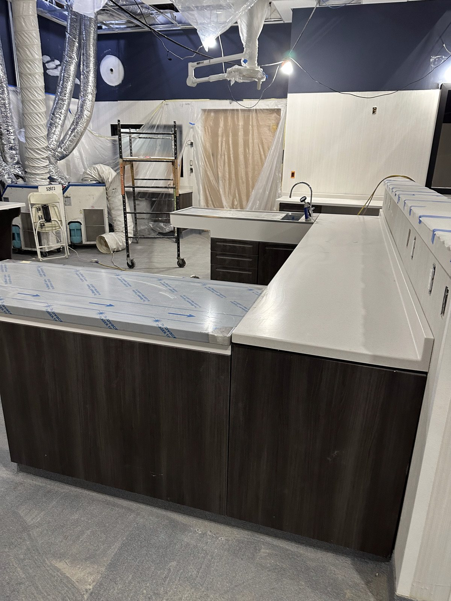
The event center came apart first — interior partitions, finishes, and slab demolished and cleared, leaving a clean structural shell ready to become something far more complex.
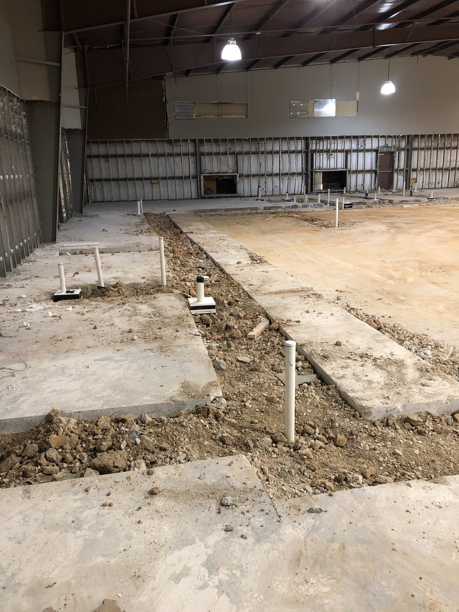
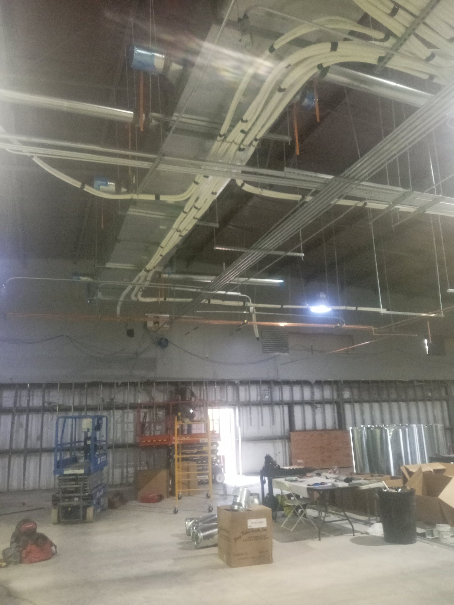
A single open hall became dozens of purpose-built spaces — exam, treatment, imaging, surgery, and isolation — framed out and threaded with the first runs of overhead infrastructure.
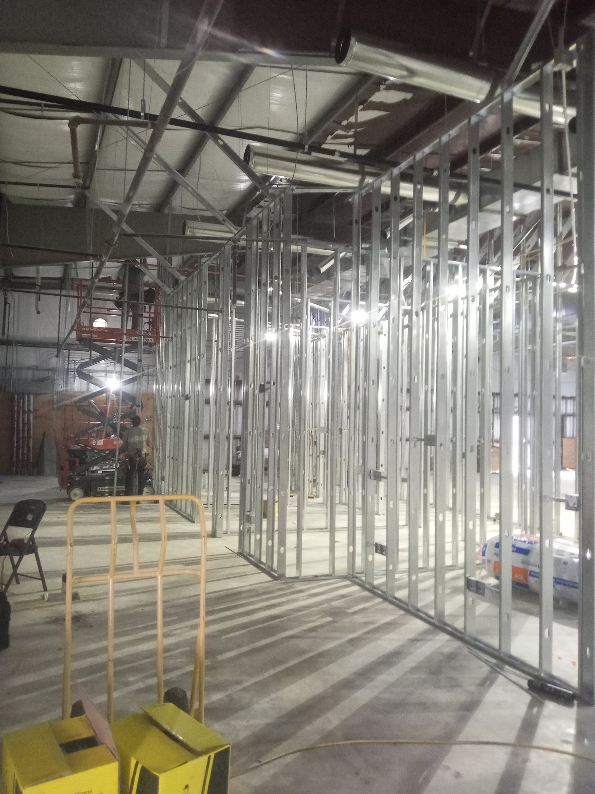
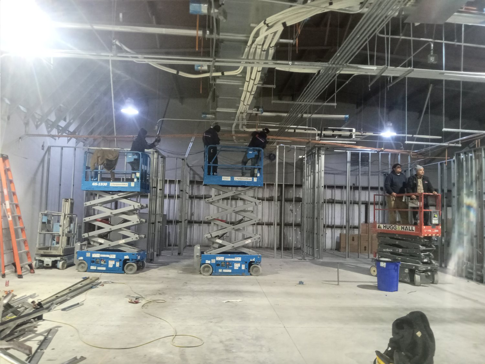
A chiller plant, a dedicated outdoor-air system, and a full medical-gas backbone — oxygen, medical air, and vacuum — gave the building the environmental and life-safety systems a specialty hospital demands.
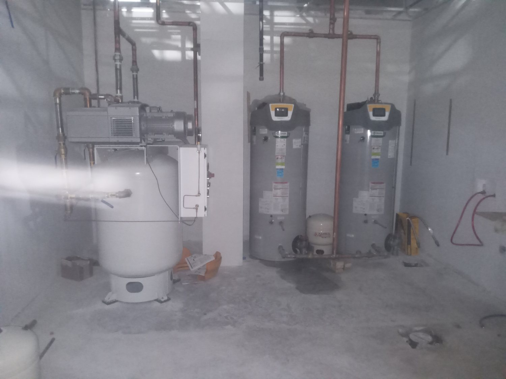
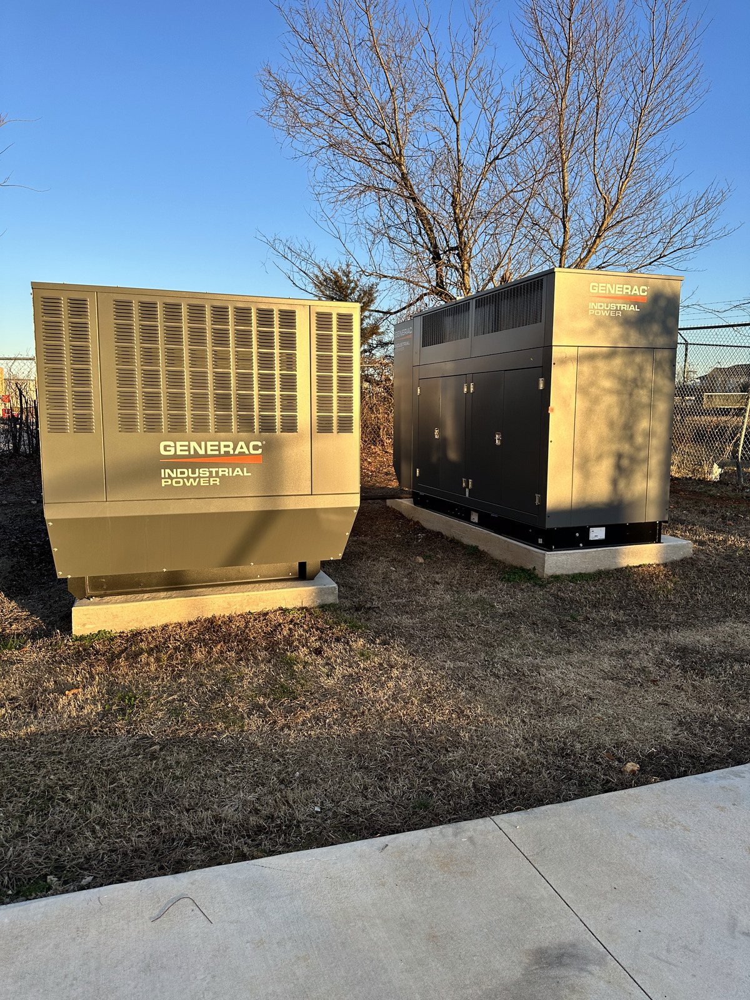
The defining work: setting major diagnostic equipment, including an MRI placed inside a purpose-built RF-shielded room, plus CT and X-ray. Equipment this size is craned in and rigged into place before the walls ever close.
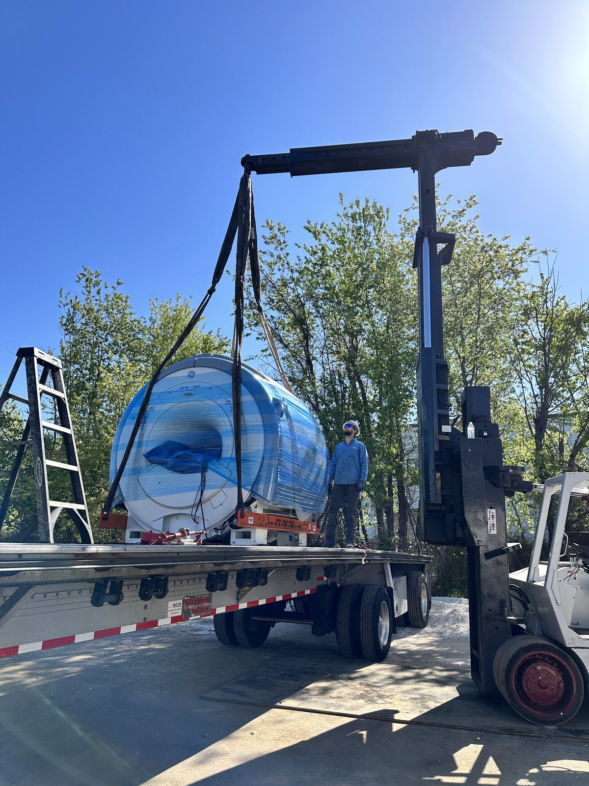
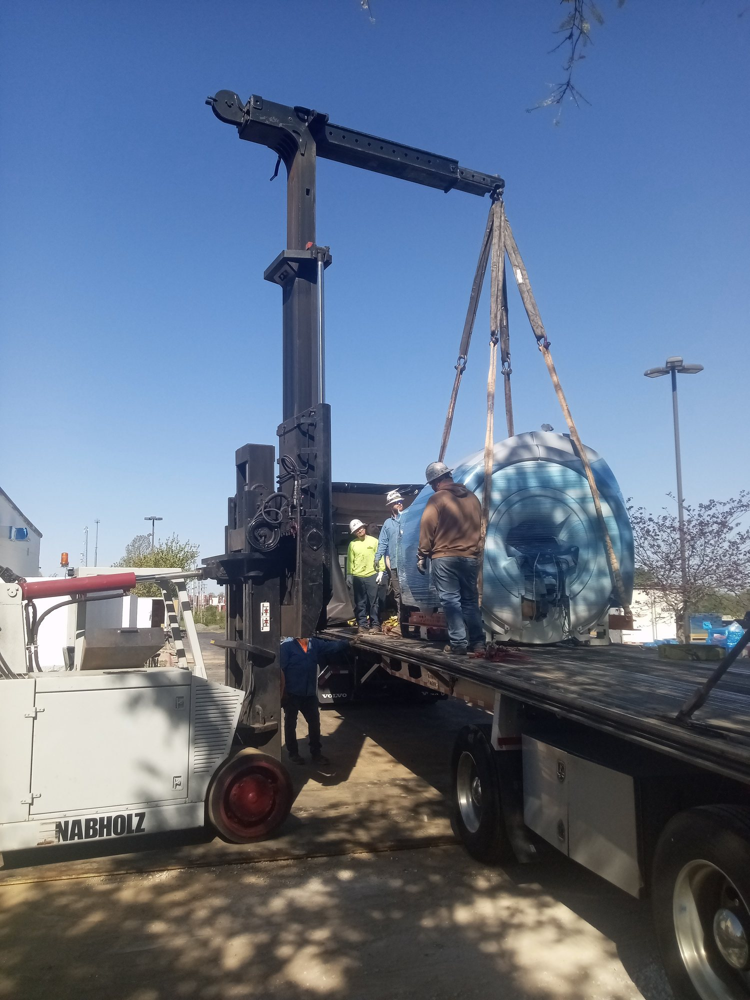
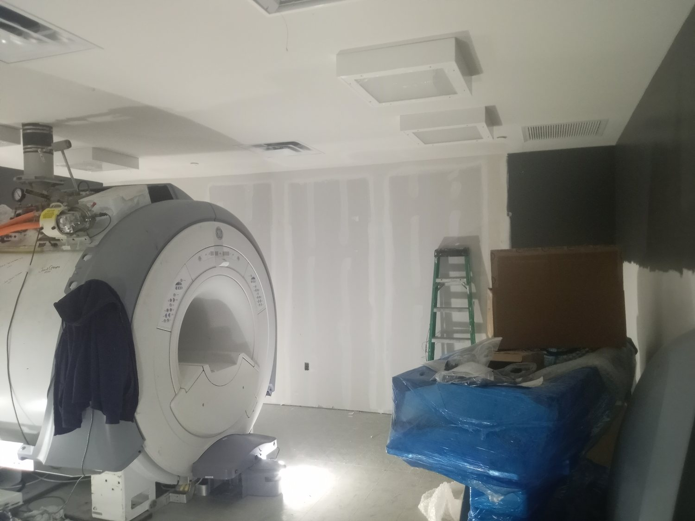
Behind the clinical systems, a warm, human finish: herringbone wood floors, custom casework, a stone reception desk, and bright, calm spaces for the families who come through the door.
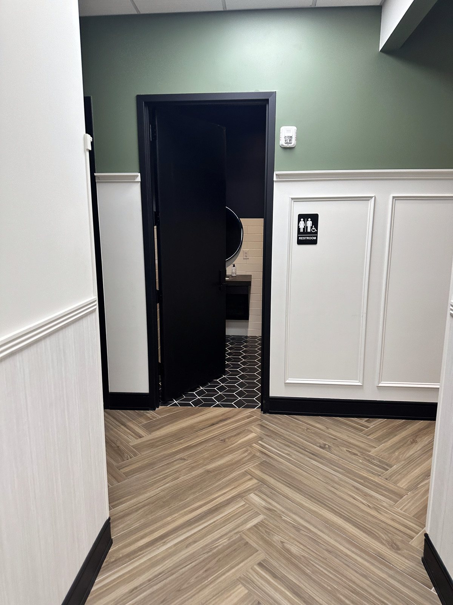
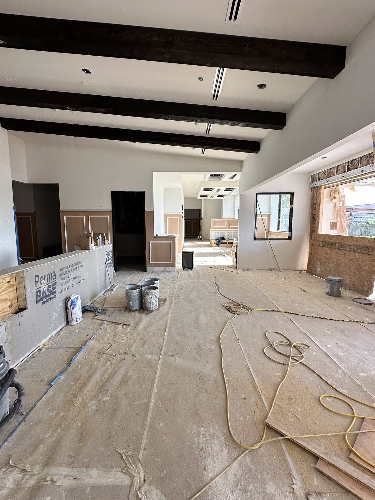
What was an event center now stands as the region's specialty and emergency animal hospital — entrance canopy, branded facade, and a building ready for round-the-clock care.

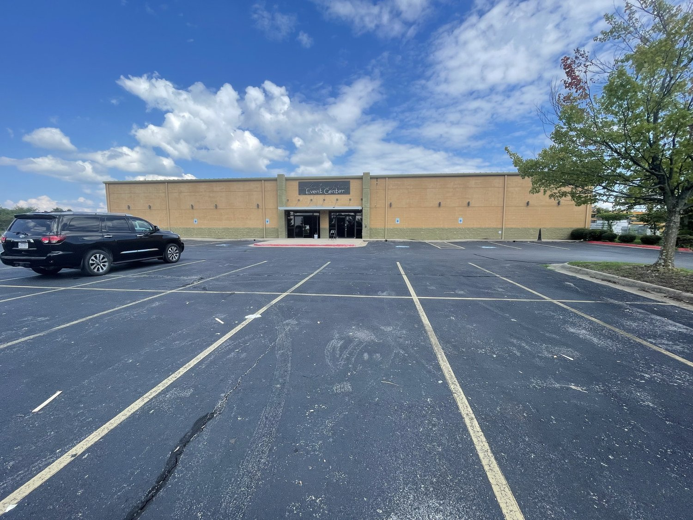
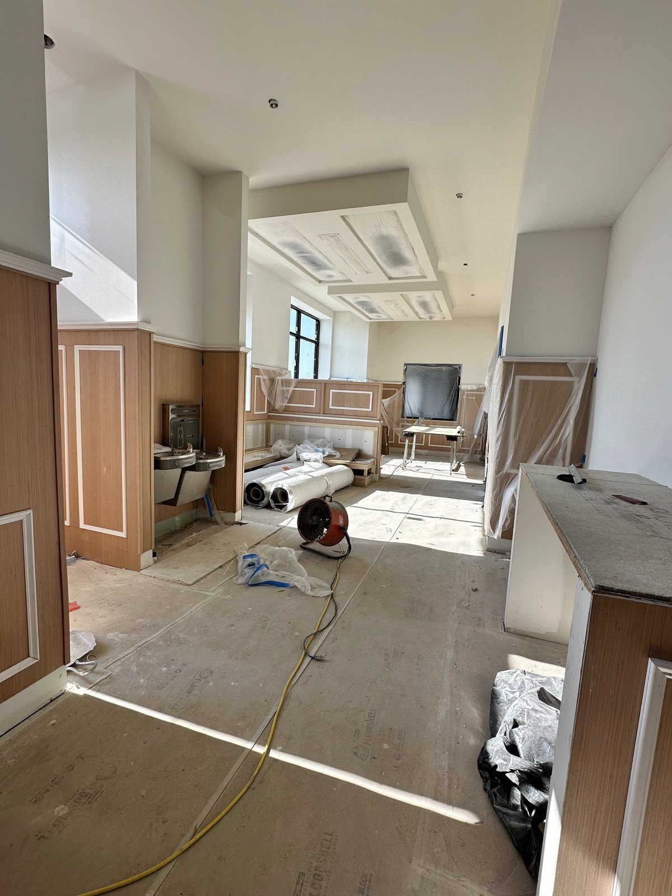
From medical and imaging suites to full mechanical and life-safety systems, Spire self-manages the kind of high-complexity work most contractors hand off — demolition to delivery.
Commercial · Healthcare · Adaptive Reuse · Specialty Facilities